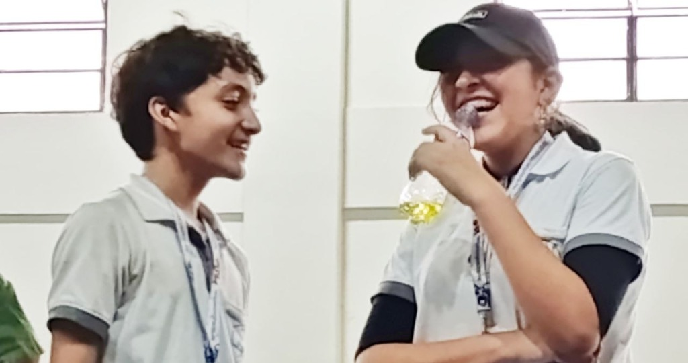

El concurso
El 1.er Concurso Distrital de Robótica 2026: qué se convocó, qué pasó el 31 de octubre y qué encontramos después al mirar los documentos con calma. Todo lo que se afirma aquí consta en una fuente citada; lo que no se puede probar, se pregunta.
La cinta negra se puede arrastrar: muévela para leer lo que hay debajo o dibuja figuras nuevas con ella.
La convocatoria
La Dirección Distrital de Educación Santa Cruz 1 convocó a los colegios del distrito a un torneo con tres categorías: seguidor de línea, sumo RC y carrera de insectos, esta última solo para estudiantes de primaria. Hubo dos jornadas de capacitación los sábados 17 y 24 de octubre y el evento se corrió el sábado 31, en el Colegio Internacional San Marcos de Santa Cruz de la Sierra.
La inscripción costó 150 Bs por equipo, pagada por QR a una cuenta personal del organizador. La entrada del público costó 5 Bs y solo daba acceso a la zona de público: acompañar a los chicos en la zona de participantes costaba 100 Bs por adulto, un pase avisado por escrito un día antes, con multa por registro tardío. Las reglas del seguidor de línea pedían un robot autónomo de menos de 25 × 30 cm, sin turbinas, con máximo ocho sensores y una sola batería 18650 o cuatro pilas AA, sobre una pista de 10 a 30 m con curvas, cruces y bifurcaciones. Cada robot tenía dos minutos por intento y contaba el mejor tiempo.
Respondieron quince unidades educativas con 57 equipos: diez fiscales, cinco privadas y ninguna de convenio, aunque la convocatoria las incluía. Tres colegios vinieron de fuera del distrito. El detalle, colegio por colegio y por categoría: quiénes respondieron al concurso.
Los premios se conocieron recién el 21 de octubre, por una hoja anexa que el organizador pasó por el grupo de WhatsApp: la convocatoria escrita no los mencionaba. Casi nada era dinero u objetos: una beca completa de estudio, una beca de cursos de robótica, una invitación a un torneo internacional y una sesión de terapia psicológica, cada una con el nombre del donante al lado. Premio por premio, quién lo puso y con quién estaba conectado: los premios, desglosados.
El desenlace
Arturito corrió sus tres oportunidades y no completó el circuito en ninguna. Volvió a casa entero, eso sí, y el equipo volvió riéndose.
El 1.º, 2.º y 3.º de seguidor de línea fueron para los robots «Internacional San Marcos 1, 2 y 3», del colegio sede, todos bajo los 14 segundos y los tres inscritos en la lista oficial a nombre de un mismo estudiante del colegio sede. El único robot por fuera de ese trío que cerró el recorrido dentro de los dos minutos reglamentarios quedó cuarto: era de un colegio fiscal y, descontado el barrido, era el campeón real — con la beca completa de estudio incluida.
Filmamos la primera vuelta de cada robot ganador desde el borde de la pista:
La organización no publicó tabla oficial de tiempos ni registro de homologación. El podio se reconstruyó de la lista oficial de participantes, las fotos del álbum del distrito y los videos del evento; al día siguiente llegó la confirmación por una vía inesperada.
El 1 de noviembre El Deber publicó una entrevista con el organizador, Boris Claros, donde él mismo da los resultados que su página oficial no publicó. Según sus declaraciones, esto fue el podio de cada categoría:
| Categoría (según la nota) | Podio según el organizador |
|---|---|
| Seguidor de línea amateur | Un mismo estudiante de San Marcos se llevó «los tres primeros puestos» |
| Carrera de insectos | 1.º el mismo estudiante · 2.º y 3.º colegio Golden Lion |
| Sumo autónomo de 3 kg | 1.º y 2.º el mismo estudiante · 3.º Simón Bolívar de Yapacaní |
| Sumo RC | 1.º y 2.º Simón Bolívar de Yapacaní · 3.º el mismo estudiante |
La entrevista aporta detalles que no constan en ningún documento del evento. Habla de cuatro categorías, cuando la convocatoria solo convocó tres: el «sumo autónomo de tres kilos» no figura ni en el reglamento ni en la lista oficial de participantes. Menciona «premios económicos» entre los incentivos, algo que la hoja oficial de premios no lista. Cifra la participación en más de 200 estudiantes de 25 colegios, la estimación de la organización; la lista oficial registra 57 equipos de 15 unidades educativas. Y presenta a un hermano del ganador como «coordinador del evento», un rol que en la convocatoria no aparecía: él estaba anunciado solo como capacitador.
Sigue siendo prensa, no una tabla oficial: lo que piden las familias es el documento con los tiempos de cada robot. Pero el barrido de seguidor de línea ya no se reconstruye, lo declaró el propio organizador.

La investigación
Después del evento cruzamos la convocatoria, la lista oficial de participantes, la prensa y los registros públicos. Lo que aparece no necesita interpretación:
- El capacitador era el campeón. La propia convocatoria anunciaba como capacitadores a dos hermanos del equipo «Team Wang Jallaza», competidores del instituto TechHome desde 2022: uno de ellos suma 13 medallas en una sola edición de Robomatrix y corrió la final mundial en Rumanía. El mismo nombre figura inscrito como participante en las tres categorías — incluso en carrera de insectos, reservada a primaria — con ocho equipos del colegio sede. Los tres que barrieron el podio de seguidor corrían a su nombre.
- Los premios vuelven a casa. La beca de cursos de robótica la donaba TechHome, el instituto que entrena al ganador: volvió a su propio alumno. La invitación a Robomatrix la otorga un circuito cuyo coordinador regional en Santa Cruz es hermano del ganador. El trofeo lleva el logo de un auspicio comercial, «MEGA», que en ningún documento se identifica.
- El hermano coordinaba. En la entrevista que El Deber publicó el 1 de noviembre, un hermano del ganador figura como «coordinador del evento», no como un capacitador más. El circuito que otorga la invitación internacional tenía así a su coordinador regional dentro de la propia organización del torneo.
- El reglamento lo permitía por omisión. No limitaba cuántos robots podía inscribir una persona ni prohibía competir a capacitadores u organizadores; no tenía cláusula de conflicto de interés; el jurado lo designaba el propio comité y sus fallos eran «definitivos e inapelables»; los reclamos solo los podía hacer el capitán de equipo antes de cada ronda.
- Las preguntas se cerraron con expulsión. La noche del evento enviamos al grupo oficial diez consultas de transparencia — la tabla de tiempos, el registro de homologación, la nómina del jurado. Dieciocho minutos después el administrador expulsó al remitente y cerró el grupo: primero a solo administradores y luego vaciando a todos los miembros. Ya era el segundo cierre tras un reclamo escrito.
Un competidor con ese palmarés, inscrito con los equipos del colegio sede en las tres categorías, puede quedarse legalmente con el primero, segundo y tercer puesto de todo: los premios regresan a quienes los pusieron y el evento entero funciona como publicidad. Mientras tanto, cada equipo rival pagó sus 150 Bs de inscripción por la esperanza de un lugar reconocido.
Fuentes: la convocatoria y su hoja de premios, la lista oficial de participantes, el export del grupo de WhatsApp, el álbum del distrito en Facebook, la prensa local (El Deber) y las páginas de Robomatrix y TechHome. El detalle con tablas: premios y colegios.
Los reclamos
Dentro de la pista nadie podía reclamar salvo el capitán del equipo, y solo antes de cada ronda. El capitán era un niño de unos trece años; los tutores y los padres mirábamos desde las gradas, sin acceso a la zona de competencia. Aun así hubo reclamos: los de los niños, que nadie tomó en cuenta, y los que llegaron por otros canales.
Uno de esos reclamos quedó escrito en el grupo oficial, el día antes del evento. La acreditación y el sorteo se habían anunciado para el jueves por la tarde, se pasaron al viernes y el viernes por la mañana, con gente ya en la puerta, avisaron que sería recién a las dos de la tarde. Un profesor protestó por escrito:
Cambian de lugar y hora varias veces. Soy profesor: debo pedir permiso y dejar reemplazo para poder asistir a los lugares que indican, no puedo estar saliendo del colegio a la hora que sea. Usted lo cambió para hoy por la mañana y recién a las ocho dice para la tarde. No es correcto.
Un minuto después el administrador cerró el grupo: desde ahí solo los administradores podían escribir. Dos minutos más tarde respondió, con el reclamo todavía arriba en la conversación: «¿De qué unidad educativa es? Hablaré con su director».
Los plazos se movían igual. La confirmación de participación vencía el 23 de octubre, luego el 27 «impostergablemente», luego el 28. Cada aviso llegaba por ese grupo, a veces el mismo día.
Un representante de otro equipo nos escribió por WhatsApp unos días después. Lo transcribimos sin su nombre:
En mi caso, mi robot no completó el circuito y solo vi uno, aparte del colegio San Marcos, que pudo completarlo. Vi muchísimas irregularidades en la competencia; en su momento quise quejarme pero no nos tomaron en cuenta.
Primero, ellos establecieron reglas para el seguidor de línea que luego eliminaron por completo. Con mi equipo luchamos hartísimo para que nuestro robot funcionara con una batería, para que después cambiaran a dos pilas y otro tipo de motores.
Vimos con mi tutor que los organizadores del evento asesoraban a los chicos del colegio San Marcos y había una clara preferencia. Nos pareció absurdo que metieran tres robots del mismo colegio (obviamente iban a ganar los tres premios, porque los mismos jueces eran sus asesores y ellos ya los trajeron armados con otros materiales). Ellos los aconsejaban a los del colegio, pero cuando una chica del colegio de polera azul oscuro les pidió un consejo le dijeron: «Niña, pregúntele a su tutor». Ese es un claro ejemplo de la diferencia que hacían.
Tercero, era una competencia «distrital» y vinieron colegios desde Puerto Quijarro.
Cuarto, con mi tutor vimos que una chica que estaba en las gradas (creemos que era del colegio) estaba apuntando con un láser, cosa que igual está prohibido porque bloquea los sensores del seguidor de línea.
Quinto, en la entrega de credenciales cambiaron los horarios a su antojo y ni siquiera fueron capaces de pedir disculpas.
Sexto, vi que cuando un papá se quejó por las irregularidades le dijeron: «Para la próxima no participe». ¿Qué clase de evento educativo es ese?
Por último, tuve un compañero que ni siquiera tenía su certificado. Mi tutor no quiso hacer ningún problema, pero por mi parte y la de mis padres sí nos gustaría hacer una queja respecto al evento, porque fue una burla tanto para los participantes como para los padres y maestros que invirtieron mucho tiempo y dinero en esto.
Al papá que protestó le respondieron «para la próxima no participe». Cuando yo le reclamé al organizador en persona, me contestó que si no me gustaba, que hiciera mi propio evento.
Días después, en el grupo que los representantes armamos por nuestra cuenta, el mismo reclamo seguía apareciendo. Un representante de otro equipo contó que el evento le había parecido «una sacada de dinero, mal organizado y direccionado a que solo unos ganen» y que había tenido que agregarse a los grupos oficiales con un número distinto «para que respondieran a las consultas porque una vez que hacías una queja o algo, simplemente te ignoraban». Otro pedía separar principiantes de profesionales, porque «la competencia tenía participantes internacionales, profesionales, y eso no es justo». Cerrado el canal oficial, la queja se rearmó sola en otro lado.
Los mensajes del grupo se transcriben del export completo, con la fecha y la hora que registró WhatsApp; los relatos de los representantes son testimonios, no verificación: los publicamos porque coinciden con lo que vimos ese día y con lo que muestran los documentos de la sección anterior.
La carta a la Dirección Distrital
La vía interna está cerrada por diseño: el reglamento solo admite reclamos del capitán antes de cada ronda, es decir, de un niño de unos trece años al que ningún adulto podía acompañar en la pista. Acompañarlo en la zona de participantes sí se podía, a 100 Bs por adulto avisados por escrito la víspera, con multa por registro tardío: quien no pagó —o no pudo— vio la competencia desde la zona del público. La vía que queda es la petición escrita, que en Bolivia es un derecho constitucional (art. 24 CPE) y obliga a responder.
Un padre de un estudiante participante envió una nota a la directora distrital, con copia a la Dirección Departamental y al Ministerio de Educación. Pide por escrito doce cosas concretas: la tabla oficial de tiempos por robot y por ronda, el registro de homologación con la lista de robots rechazados y sus motivos, la nómina del jurado y sus vínculos con equipos y auspiciantes, la regla que permitió a una misma persona inscribir varios robots por categoría, la verificación de elegibilidad, el destino de lo recaudado por inscripciones —pagadas por QR a una cuenta personal del organizador: unos 8.550 Bs si las 57 inscripciones pagaron los 150 Bs que costaban en seguidor de línea— y la publicación oficial de los resultados.
La nota no acusa a nadie de fraude ni cuestiona el mérito de ningún estudiante: pide los documentos. Si existen y están en orden, publicarlos despeja las dudas de todas las familias; si no existen, eso también es un dato. El 3 de noviembre salió por correo electrónico y por WhatsApp hacia la directora distrital. Acá quedan la nota y sus anexos, para leer o descargar:
- La nota (versión pública) — también está la nota con todos los anexos en un solo PDF.
- Anexo A — Convocatoria y reglamentos.
- Anexo B — Extracto de la lista oficial de participantes.
- Anexo C — Hoja oficial de premios.
- Anexo D — Registro del grupo de participantes, del 21 al 31 de octubre, y capturas del mensaje borrado y la expulsión y del cierre del grupo.
- Anexo E — Las diez consultas del 31 de octubre.
- Anexo F — Prensa y publicaciones oficiales, con la captura del álbum del distrito.
- Anexo G — Reconocimiento de participación.


Hay familias que ya no están en Santa Cruz, así que las adhesiones se recolectan también en línea: Transparencia en el Concurso Distrital de Robótica. Cada firma queda verificada por correo y la lista va como anexo de respaldo a la nota.
Cómo debió ser
Antes de inscribir a un niño en cualquier concurso, media hora de tarea alcanza para mirar lo esencial:
- Quién organiza y quién capacita. Si la misma persona da el taller y luego compite, el resultado está escrito desde antes.
- Quiénes están inscritos. La lista de participantes suele ser pública: buscar los nombres en prensa y torneos anteriores dice si el torneo «amateur» es amateur de verdad.
- Quién pone los premios y qué gana con ello. Una beca que nombra a su donante es publicidad; si el donante tiene un alumno compitiendo, el premio puede no salir nunca de casa.
- Qué dice el reglamento sobre reclamos, jurado y conflictos de interés. Un reglamento que no limita inscripciones por persona ni regula vínculos le permite a un solo inscrito llevarse el podio entero, legalmente.
- Qué canal de consultas existe y si las respuestas quedan por escrito. Un grupo de WhatsApp que cierra el administrador no es un canal: es una puerta que se puede cerrar.
Una representante de otro equipo llegó a la misma conclusión y la escribió mejor que nosotros:
Yo considero que el hecho de que hagan una competencia para menores, usando la red escolar, es lo más delicado de la forma en que se desenvolvió esta competencia de robótica. Los niños, niñas y adolescentes que participaron ahora pueden quedarse con la sensación de que no importa cuántas ganas le pongan a lograr el objetivo: puede ganar el que más violenta las reglas si es amparado por quien organiza esta clase de eventos. Yo me quedé con un mal sabor al terminar un evento que me resultó inconcluso y sin ninguna transparencia.
A eso nos suscribimos. Nada de esto quita lo que valió participar: los chicos aprendieron a competir y lo pasaron bien. Lo que cambia es que la próxima inscripción se firma con los ojos abiertos.